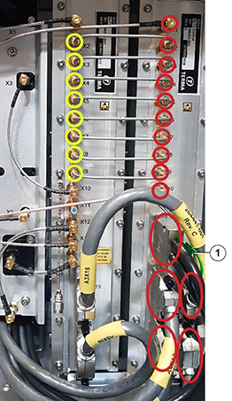

Removal of the RxTx Control.
-
Create a transceiver backup file with the Radar Service Application. For this use the Backup/Restore view.
-
Stop antenna rotation (if active) with the Radar Service Application.
-
Switch “Mains Off” with the Radar Service
Application.
-
Turn off power to the transceiver with the power switch on
the Power Supply Unit
-
Use a Torque wrench, 1
Nm and an Extender for
torque wrench to loosen all SMA
Connectors (X1 - X10) on the RxTx Control
(see red circles in Figure 1).
Figure 1.
Connectors

- 1
- Green plastic ring
-
Unplug the four D-Sub Connectors
(X12, X13, X14, X15) on the RxTx Control (see the four
lower red ellipses in Figure 1).
-
Unplug one PCIe Connector (X11) on
the RxTx Control by pulling it outwards in the green
plastic ring (see item 1 in Figure 1).
-
Use a Torque wrench, 1 Nm and an
Extender for torque wrench
to loosen the SMA Connectors (X2 - X9) on the RxTx, to remove or turn the semi-rigid cables, so that
the RxTx Control can be pulled out without any
obstructions (see yellow circles in Figure 1).
-
With the Screwdriver PH2
x 300 loosen and remove the four screws, which fix the
RxTx Control to the back of the cabinet (see red
circles in Figure
2).
The two lower screws are accessible through the
cable tray at the bottom - the two upper screws are accessible through the
two slots on the front plate (see red circles in
Figure 3).
Figure 2.
Screws

Figure 3. Two
Slots

-
Take out the RxTx Control module and
place it in an anti-static bag.